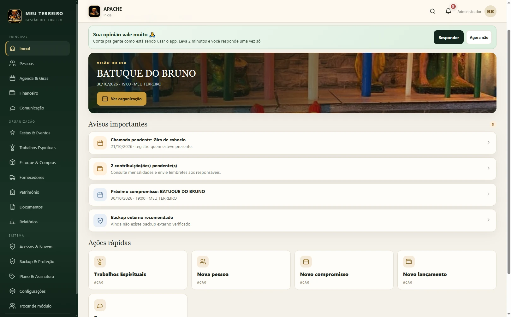
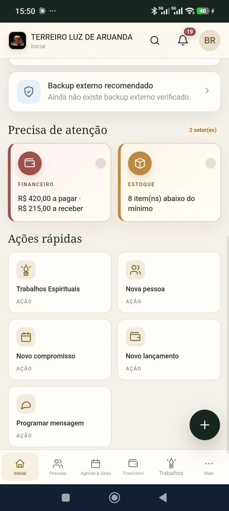

Agenda & Giras
Datas, horários, participantes e materiais. Visualize os compromissos por período e organize os encontros da casa.
Conhecer a agenda ↗Menos papelada. Mais organização.
Pessoas, giras, financeiro e estoque em um aplicativo que acompanha a rotina do seu terreiro.
Entre uma gira e outra, existe uma casa inteira para cuidar. Pessoas, contribuições, materiais, compromissos e tantos detalhes que não precisam ficar espalhados.
O Meu Terreiro App reúne esse cuidado em um só lugar. Para você acompanhar o que importa e dedicar mais tempo à sua comunidade.
Conheça tudo o que você pode organizarPlaneje com o conforto do computador.
Consulte com a praticidade do celular.
O mesmo aplicativo, em formatos que se adaptam.


Avisos importantes, pendências e ações rápidas ajudam você a encontrar o próximo passo sem procurar em vários lugares.
Exemplos de telas enviados pela casa. No modo local, cada aparelho guarda seus dados. O Terreiro Conectado compartilha informações e ações conforme as permissões de cada acesso.
Ferramentas que fazem sentido para
quem conhece a rotina de uma casa.
Datas, horários, participantes e materiais. Visualize os compromissos por período e organize os encontros da casa.
Conhecer a agenda ↗Receitas, despesas, contas a pagar e a receber. Acompanhe contribuições e gere relatórios para a prestação de contas.
Ver o financeiro ↗Cadastros, funções, contatos e aniversários. Tenha as informações de filhos, consulentes e convidados à mão.
Ver os cadastros ↗Saiba o que está acabando, registre movimentações e organize reposições com seus fornecedores.
Ver estoque e apoio ↗A organização começa com quem administra.
A conexão chega a quem faz parte.
Administre a casa, envie convites e aprove os acessos. Defina o que cada pessoa pode consultar ou fazer.
Envie o convite da casa pelo WhatsApp.
A pessoa cria sua senha. Você confirma o acesso.
Compartilhe a rotina conforme cada permissão.
Explore a administração da casa
e escolha a forma de uso que faz sentido.
O controle interno da casa no celular ou no computador, com dados armazenados no aparelho utilizado.
A casa organizada com acesso próprio para filhos, cambonos e consulentes, conforme suas permissões.
Abra o Meu Terreiro App, escolha seu acesso e comece a cuidar da organização da sua casa.
Precisa de uma orientação?
Fale com a gente.
O Meu Terreiro é um aplicativo que você acessa pelo navegador e pode instalar no celular ou computador. Depois de instalar, ele ganha um ícone e abre como app. Esta página apresenta o produto; o botão “Acessar o app” leva ao aplicativo.
Sim. O aplicativo tem layouts para telas grandes e pequenas. No modo local, cada aparelho guarda seus próprios dados; para transferi-los, utilize o backup e a restauração. Com o Terreiro Conectado, agenda, avisos e áreas autorizadas são compartilhados com os acessos da casa.
Filhos acompanham agenda, mensalidades, avisos e seu cadastro. Cambonos também podem acompanhar materiais e áreas autorizadas. Consulentes veem giras abertas e as orientações enviadas para eles. O Pai/Mãe aprova os acessos e define as permissões.
A administração local pode ser utilizada sem internet após o carregamento e a instalação do app. O acesso à nuvem, a atualização de informações compartilhadas e os serviços externos precisam de conexão.
O modo local oferece 60 dias para experimentar os recursos. Depois desse período, é necessário ativar o PRO para continuar. O Terreiro Conectado tem contratação própria, com código de liberação. Consulte as condições pelo WhatsApp.
Use os controles de acesso e mantenha cópias de segurança externas pelo recurso Backup & Proteção. A nuvem compartilha as informações previstas para cada acesso e não substitui o backup completo dos dados locais.